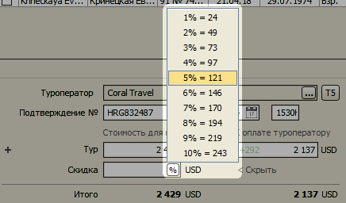

Изменения в версии 1.2
- Автоматическое заполнение информации о туроператоре
- Внутренние курсы туроператоров
- Расчет скидки клиенту
Автоматическое заполнение информации о туроператоре
При добавлении нового туроператора достаточно ввести первую букву наименования и
в появившемся списке выбрать добавляемый туроператор.

Программа автоматически заполнит большинство полей: номер в федеральном реестре, телефон, факс, сайт, адрес, информацию о юр. лице, данные финансовой гарантии.

Данная функция доступна для более чем 50 туроператоров. Полный список поддерживаемых
туроператоров доступен в справочнике туроператоров в контекстном меню "Список
туроператоров".
Внутренние курсы туроператоров
В справочнике туроператоров появилась кнопка "Загрузить курсы". Нажав на нее, вы
можете загрузить внутренние курсы на текущий день всех поддерживаемых (около 50)
туроператоров.

Внимание! Данные загружаются напрямую с сайтов туроператоров, поэтому данная
функция может расходовать значительный объем интернет-трафика (40-300 Кбайт на
одного туроператора).
Расчет скидки клиенту
Если установить курсор мыши над полем "Скидка", в нем появится кнопка "%".
При нажатии на эту кнопку будет показан список вариантов суммы скидки в процентах
от стоимости тура.

Остались вопросы? Напишите нам на e-mail